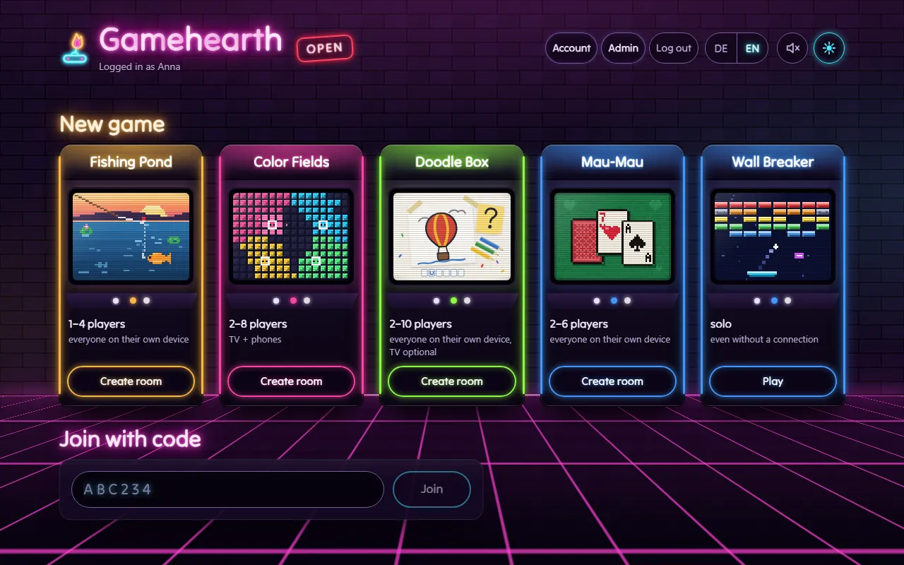
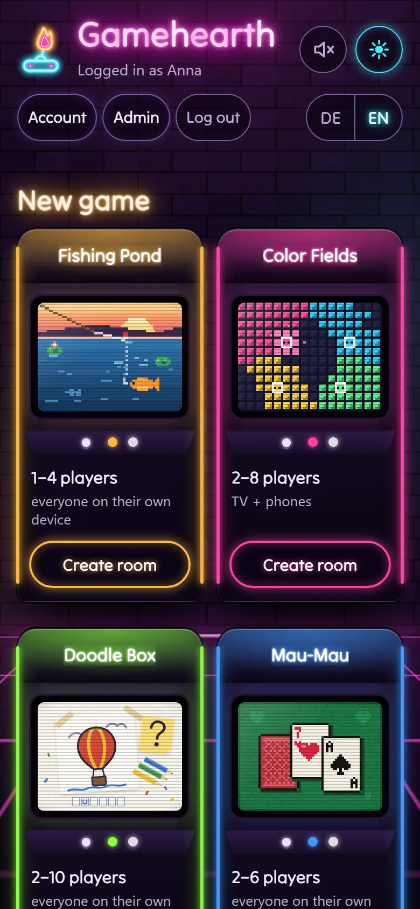
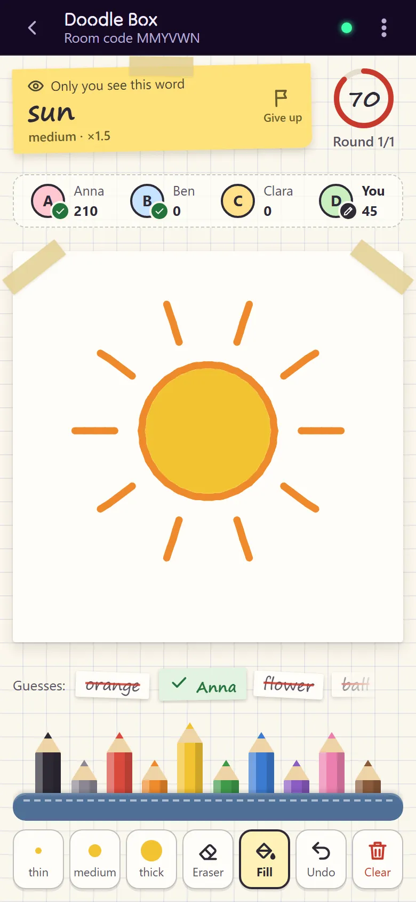
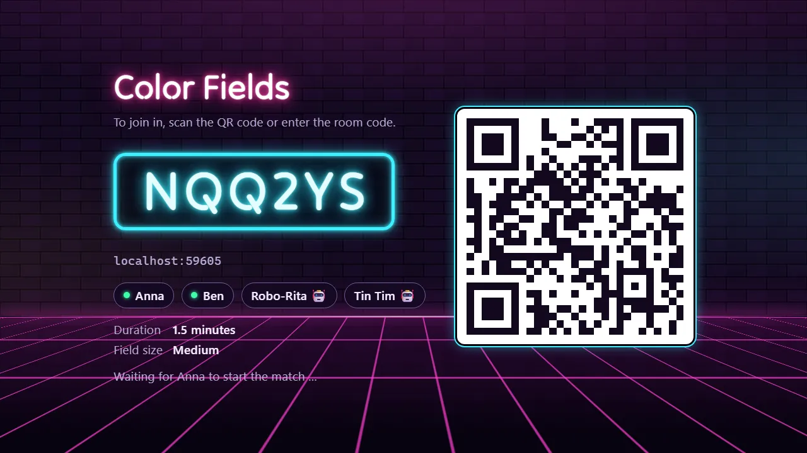
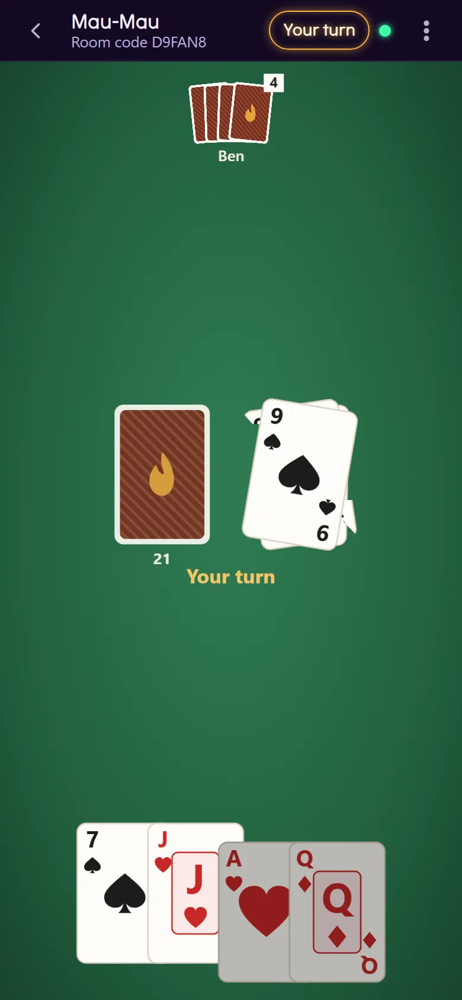
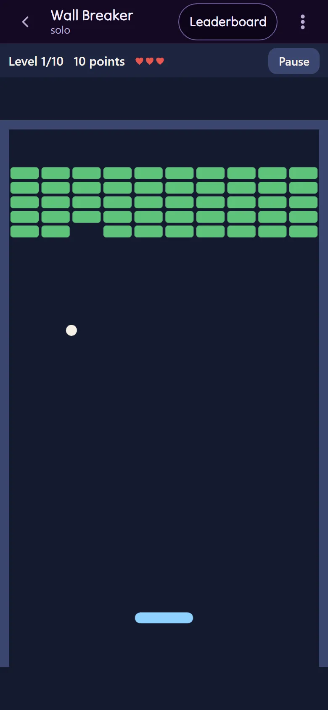
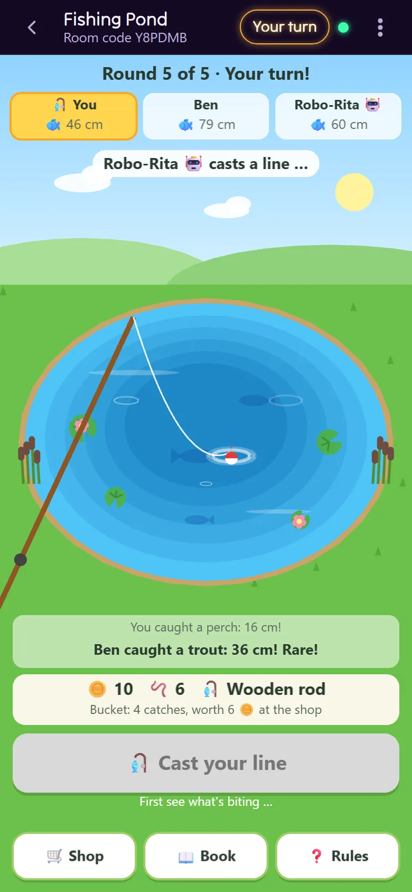
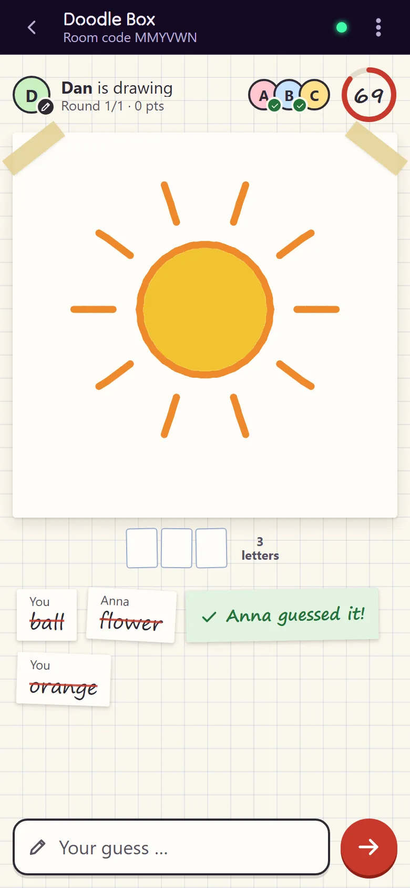

Yours to run
One container, one data folder, accounts only by invite. No app store and no third-party account between you and your players.
A game platform you host yourself, for your own circle of family and friends.
Open source from end to end. One Docker container serves an installable app to every phone, tablet, laptop and TV. Games come from catalogs you choose, run in sandboxes, and are designed to be built by people who don't program, together with an AI agent.


The home page of a fresh server with the five games from the public catalog.
Gamehearth is a fully open-source game platform that anyone can host. Players open the app on any device, connected to the server of their choice. That server has only the games its operator wants: for one player or several, turn-based or realtime, everyone on their own device or a TV with phones as controllers.
The games are open source as well and come from the community. Making them is built so that non-programmers can create games with an AI agent: a small SDK, a strict contract for game rules, and a checker that plays hundreds of matches before anyone else does.
One container, one data folder, accounts only by invite. No app store and no third-party account between you and your players.
Game code runs in a sandbox on the server and in an isolated frame in the browser. The platform, not the game, decides who sees what.
Templates, short docs and automatic bot matches catch the typical mistakes of AI-written games before players ever see them.
It starts small on purpose: built first for a circle of family and friends. A community registry and moderation come once the platform has proven itself. But anything that would later force a rework of every game is part of the contract from day one: pure rules, the package format, license data in the manifest and isolation in the browser.
Three kinds of people use Gamehearth. Each of them needs very little.


npx gamehearth new my-game creates a small, complete game plus AGENTS.md, the instructions for your AI agent.npm run dev shows every seat side by side, with bots and errors worded for the agent.npm run check plays hundreds of bot matches; npm run pack builds the package for a catalog.npx gamehearth new my-game
cd my-game
npm run dev
The browser holds the app and, inside it, the game in a locked-down frame. The server holds the truth: accounts, rooms and the game rules, run in a sandbox. Games reach the server as packages from catalogs.
postMessage. The app checks the sender, the shape and the size of the message.public for everyone, players[id] for one seat, secret for nobody. The platform cuts each device's view from it.Every part was decided in writing, with the alternatives that lost. These are the short versions; the long ones are in the design document.
TypeScript on Node, shipped as one Docker image: accounts, rooms, catalogs, the game sandbox and the app itself.
Why
node:sqlite, node:http and ws: nothing to compile, few dependencies.Rejected: Kotlin with GraalJS (more memory, types maintained twice) and Go with an embedded JavaScript engine (a second language, slower realtime ticks).
Preact and Vite, delivered by the server as an installable web app.
Why
Rejected for now: a native shell app with a server list. It may come later, wrapped around the same PWA.
Every game runs in an iframe with sandbox but without allow-same-origin, under a strict content security policy: no requests, no cookies, no storage.
Why
postMessage, and the app checks every message.Rejected: a subdomain per game, which would demand wildcard DNS and wildcard certificates from everyone who hosts.
Multiplayer rules are one pure function, (state, action) → newState, and the server runs it.
Why
Math.random. Time and randomness come from the SDK, so every match can be replayed from its seed and moves.Rejected: a free playerView function per game. It can be added later for special cases, on top.
Game code runs in QuickJS compiled to WebAssembly: one sandbox per room, all inside one worker thread.
Why
Rejected: a container per game (too much memory and storage for a small server) and a pool of V8 workers (no memory limit, access to Node).
defineGame for the rules, connect and connectSolo for the game's screen, plus texts in several languages, bots and sound.
Why
move() answers "ok" or an error code, and the app shows reconnects, errors and rate limits itself. Games hardly handle errors.Rejected: an SDK made only of events. Every game would build its own error display, and AI code easily forgets it. A copyleft SDK would force copyleft on every game.
new, dev, check, pack and catalog add, with three templates: Card Duel (turn-based), Tag (realtime, TV and phones) and Mushroom Hunt (single player).
Why
AGENTS.md teaches it the contract and points to the docs that update with the SDK.new asks no questions: often an agent is typing, and agents get stuck on prompts.dev shows all seats at once, so leaks stand out, and replays the match when the rules change. It uses the same sandbox as the server.check: bot matches and leak detectionPlays hundreds of matches with random bots for every allowed player count and every option, in Node and again in the server's QuickJS.
Why
secret or another player's hand that ends up where it doesn't belong.pack only builds after a green check.A game is a ZIP built by pack. A catalog is a catalog.json in a Git repo, an index with versions, sizes and checksums, much like F-Droid.
Why
Rejected: the server cloning Git repos (git in the image, more attack surface) and installing updates automatically (a broken release would reach everyone).
Realtime games add tick(state, dt, ctx) at a fixed 20 Hz. Inputs from the phones are ordinary moves, collected until the next tick.
Why
check, bots and leak detection working unchanged.Rejected for now: client-side prediction with rollback. Possible, since rules are deterministic, but it is the hardest network code and much harder to debug for AI developers.

Single-player games need no reducer: any engine and any game loop, plus a save and best scores from the SDK.
Why
An optional bot function fills seats in the lobby or takes over a seat ("I have to go"). game.sound() plays through the platform.
Why
All five are in the public Gamehearth catalog. Each has its own repository and reaches a server the way any community game would: a release with a package, an entry in the catalog, a click in the admin view. Code under MIT, graphics under CC0. The screenshots on this page come from a fresh local server with demo players.


The TV shows the field, the phones are d-pads. Run across the grid, paint every square you step on and splat a 3×3 blob now and then. When 90 seconds are up, the largest area wins.

The classic shedding game, everyone on their own phone. House rules are options in the lobby, and a bot that plays sensibly fills empty seats.

Ball and paddle against ten walls of bricks, with power-ups. Plays offline; the save and best score follow you to your other devices.

Take turns at the pond: catch fish, sell them at the shop, buy better rods. The collection book lives in your profile and grows from match to match.

One player draws a word with a finger, everyone else watches the picture appear on their own phone and guesses. The faster you guess, the more points you get. Players can add their own words, and a TV is optional.
You need Node.js 22 or newer and, if you don't program, an AI agent such as Claude Code, Cursor or Copilot.
npx gamehearth new my-game
cd my-game
npm run devThen open the address dev prints. All players sit there side by side; play each seat yourself or hand it to a bot. Open the folder with your agent and describe the game you want.
For a party game with a TV add --template realtime, for a single-player game --template single. On GitHub, the starter repository is the same thing as a template.
npm run check
npm run pack
npx gamehearth catalog add catalog.json <package-url> --name "My catalog"check plays the game the way the platform will, pack builds the package, and the repo's CI attaches it to a release. List it in your own catalog.json, and any server can add that catalog.
Any machine with Docker will do. The image brings the app and the server, but no games.
git clone https://github.com/hearthbit/gamehearth.git
cd gamehearth
docker build -t gamehearth .
docker run -p 8080:8080 \
-v gamehearth-data:/data gamehearthDatabase, backups and installed games are kept under /data.
docker logs <container>). Append it to the server's address and open it to create the first admin.-e TRUST_PROXY=1.The copyright notice everywhere is "The Gamehearth contributors".
| Part | License |
|---|---|
| Server and app (PWA client) | AGPL-3.0 |
| SDK, dev tool and templates | MIT |
| The five games: code | MIT |
| The five games: graphics | CC0 |
| The Gamehearth catalog | CC0 |
check verifies it.